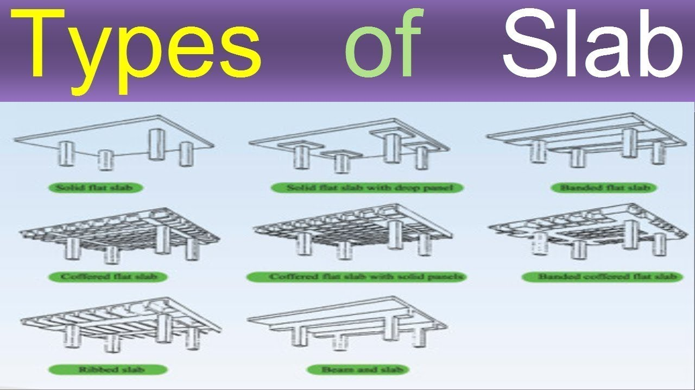

Defination of slab
 Slabs create flat, usually horizontal surfaces in building floors, roofs, bridges, and other constructions. Walls can support the slab, and reinforced concrete beams are normally cast monolithically with the slab, structural steel beams, columns, or the earth itself.
Different Types of Slabs Used in Construction
The flat slab is a reinforced concrete slab supported by concrete columns or caps. The flat plate is also beamless since it has no columns. Loads are delivered directly to pillars. This type of structure gives the structure an appealing artistic appearance. The simple roof disperses heat more quickly than a standard column plate structure and is considered less flammable in the case of a fire. The plain plate is easier to construct and requires less contouring. The Flat slab must be at least 8 inches thick (200mm).
Uses of Flat Slab:
Larger headroom or a lower story height and a pleasing design provide a
basic roof layer with better air distribution in the forming process.
Constructability is simple and efficient.
This plate is offered in Flat
parking plates and is commonly used in parking decks, commercial premises,
restaurants, or other situations where beam predictions are not desired.
Advantages of Flat Slab:
When a deep fake ceiling is not necessary, it reduces floor-to-floor heights. It increases the shear strength of the slab.The height of the auto sprinkler can be reduced.
There is less time to construct.
Reduce the amount of time spent in the slab by reducing the slab’s transparent or efficient length.
Disadvantages of Flat Slab:
It is impossible to have a large span when using a flat plate technique.Not ideal for supporting thin walls.
High slab bulkiness.